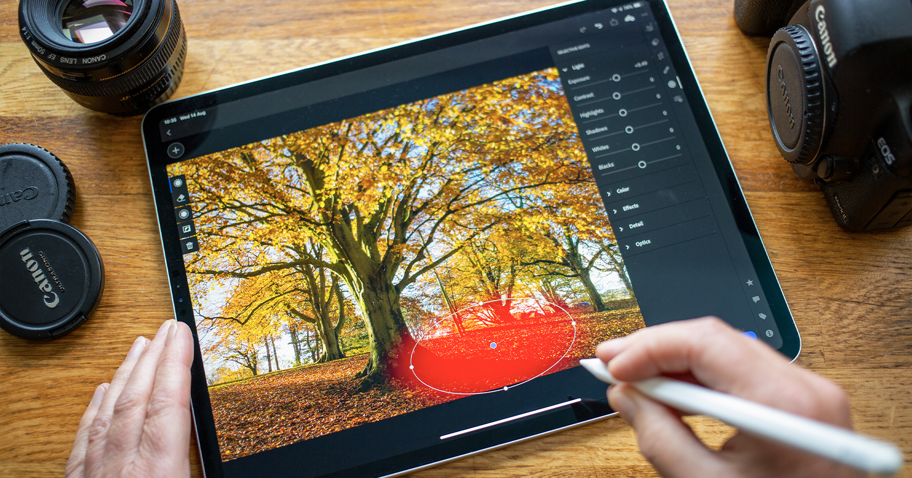
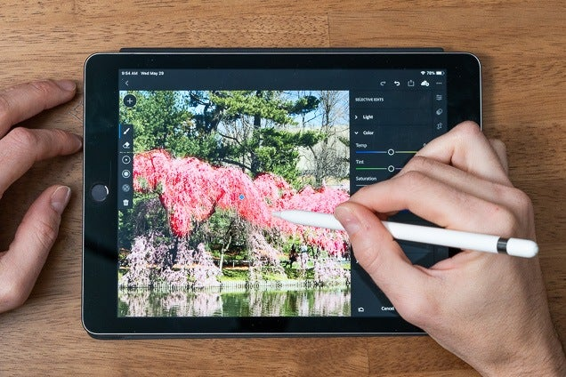

An image editing application for digital photos. It is used to crop and touch up photos, as well as organize them into albums and slide shows. Photo editors typically do not have the myriad filters and features of a full-blown image editor such as Adobe's Photoshop or Corel's Paint Shop Pro.

The most important part of capturing product photos is the work that happens AFTER they’re shot. Post-processing can both make up for effects you couldn’t create during the shoot and enhance the beautiful feature you did capture. It’s essentially the icing on the cake.

Have you ever needed to edit an image on your computer but weren't quite sure how to get started? Perhaps you were asked to edit a picture for a company newsletter or blog article, or maybe you just wanted to touch up some vacation photos before sharing them with your friends.
Mirrorless cameras have come a long way since their inception, with automatic eye focusing, incredible in-body image stabilization, and compact ergonomics. But there’s still one thing I’m frustrated with – their inability to move on from a method of editing and sharing images that's ancient compared to Android and iOS smartphones.
Since the advent of digital cameras we’ve had the ability to develop our own photographs on computers (and now smart devices) with increasing flexibility. While many cameras do offer in-camera editing, it’s often clunky and limited.
ive photo is the feature that is present in the iPhone camera that gives life to your pictures. Usually, a still photo freezes the moment but the Live Photo captures a 3-second movement of the image. Long exposure images can also be created through Live Photos. It adds pre and post-production situations by capturing the live photos from 1.5 seconds before you press the shutter button to 1.5 seconds after the image is captured.
It captures audio and videos to be heard for any sound that has occurred in your Live photo when you play it back. The button is present on the iPhone and you can easily switch it on or off to your requirements. You can also edit Live Photos, change the key photo, and add fun effects like Bounce and Loop. In addition to using photo editing tools, you can also change the Key Photo, trim the length or mute the sound in your Live photos.
Leaf through most people's camera rolls and you'll find that portraits are, alongside dog photos, one of the most popular forms of smartphone snapping. While there's nothing wrong with point-and-shoot snaps, those photos could likely get a serious boost from just a few small tweaks – and that's what we'll be showing you in this handy guide to nailing portrait shots.
There are lots of reasons why using a smartphone is a good idea when it comes to portrait photography. For a start, most are equipped with some kind of Portrait or Aperture mode, which you can use to recreate the effect of using a DSLR or mirrorless camera to separate your beaming subject from their background.